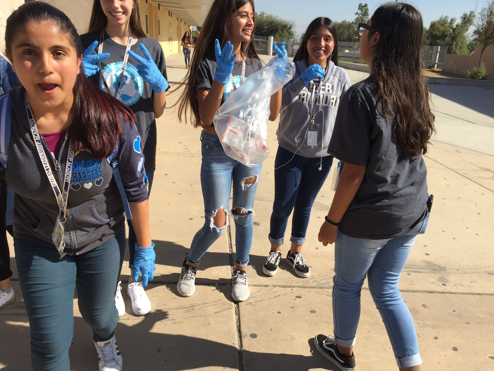
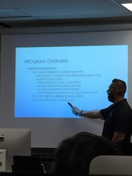
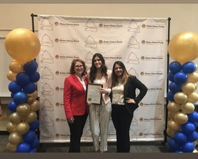
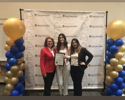

Sandra Cuevas
I am a potential graduate who is currently a teaching assistant. I have participated in an internship program at my local community in San Bernardino. I has the opportunity to have a hands on experience by managing a classroom with preschool students, as I created lesson plans and activities to entertain them. This opportunity helped me recognize how much I love my community, and specifically how much knowledge I would love to share with the younger children in my community. Not only have I done this to gain understanding from a profession as a teacher, but I have also encouraged many younger generations to have a campus clean up. Assigning roles to these kids while also inspiring them to become better leaders of tomorrow helped me accomplish my objective and goal as a potential teacher. As a potential graduate, I am one who spends most of their time offering help to younger generations. Therefore, I am currently a graduate majoring in education and soon I hope to give rise to a club specifically for aspiring teachers. I have been participating in many meetings and internships that will ultimately help me guide the club by using my persistence, care, knowledge, and experience. Thus, I will help other students by guiding them through the right path to become a professional teacher. In order to have more experience and knowledge to become an elementary school teacher, I have invested myself into becoming a part of an intern at my old highschool. This way I would have the opportunity to work with older students, and understand their mindset and perspectives on things. This way, I would have a better understanding on how to deal with things, while having experience both with older and younger students. Another experience I have had with this profession was an interview I conducted a while ago on fifth graders. This interview dealt with their own perspectives of the San Bernardino community and how they perceived it. There views helped me and inspired me to become a teacher. Being aware of the things they said about their own community, taught me how to understand these students more clearly and how to show comfort. As a student now, the courses I have been taking have also helped me gain more knowledge on the teaching curriculum and the objectives that are required to be met. Overall, these opportunities have taught me how to build skills I never knew i had and more importantly become a better person. Soon I will become an aspiring teacher, who genuinely cares for her students and strives to make them better people.
Experience
Teacher Intern
• Developed lesson plans for preschoolers
• Managed a whole class of 20 preschoolers
• Teaching Assistant
Restaurant
• Responsible for serving food and beverages
• Checking on customers to ensure they are enjoying their meals
Education
University of California Riverside
Portfolio



.jpg)
